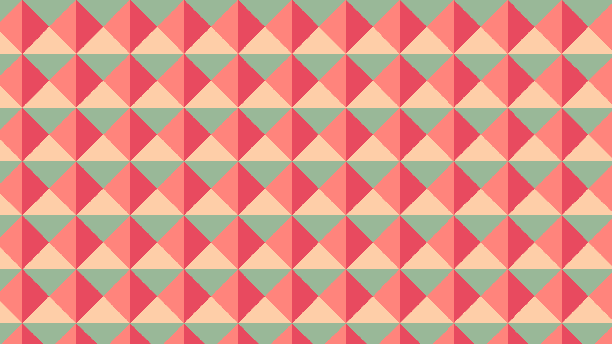

Free Pack
Documentation for 16 OGraf graphics for DaVinci Resolve Fusion. Part 1 covers setup, part 2 lists every graphic with its controls.
1. Setup
Load
- Add an OGrafLoader node in Fusion.
- Set its file to the graphic's
.ograf.json. - Keep each graphic's folder together; it loads its scripts from there.
Comps
Each graphic has a ready-made comp. Enter the folder where you saved this pack, then use Download comp on a card and drop the .setting file into Fusion.
Play
- Play runs the intro, Stop runs the outro.
- Edit controls in the Inspector; changes show at the playhead.
- Graphics are driven by time, so scrubbing and rendering match.
2. Graphics
Auto-Fit Headline
v1.0.0Non-realtime (Fusion / Resolve)18 controls

News headline that fills a fixed-width container by adjusting the Roboto Flex wdth axis (25-151) instead of CSS transform:scaleX(); the font is designed to look correct at every width, so short headlines expand and long ones condense without any letterform distortion. Weight is driven by an urgency preset (BREAKING/ALERT/UPDATE/DEVELOPING). Headline/subhead colours and sizes plus XY placement are all Inspector-controlled.
- Custom actions: Reload Font.
- Default timing: play 1s · stop 1s.
File: Auto-Fit Headline/Auto-Fit Headline.ograf.json
Controls (18)
| Control | Type | Default | Range / options |
|---|---|---|---|
| Headline | Text | AUTO-FIT HEADLINES (ROBOTO FLEX) - SHORT HEADLINES EXPAND... | |
| Urgency | List | Breaking | Breaking, Alert, Update, Developing |
| Subhead (multi-line) | Text | ||
| Headline Colour | Colour | #ffffff | |
| Subhead Colour | Colour | #ffffff | |
| Accent Colour | Colour | #ffb800 | |
| Headline Size (%) | Slider | 100 | 25 to 300 |
| Urgency Size (%) | Slider | 100 | 25 to 300 |
| Min Width (auto-fit floor, 25-100) | Slider | 62 | 25 to 100 |
| Max Width (auto-fit ceiling, 100-151) | Slider | 125 | 100 to 151 |
| Manual Width (0 = auto-fit, else 25-151) | Slider | 0 | 0 to 151 |
| Variable Font File | File | ./RobotoFlex-Variable.ttf | |
| X Position (% from left) | Slider | 6 | 0 to 100 |
| Y Position (% from top, centre) | Slider | 50 | 0 to 100 |
| Stagger (s) | Slider | 0.15 | 0 to 2 |
| Intro Duration (s) | Slider | 1 | 0.2 to 10 |
| Outro Duration (s) | Slider | 1 | 0.2 to 10 |
| Show Debug Text | Checkbox | off |
Cyber Grid
v1.0.0Non-realtime (Fusion / Resolve)17 controls

Animated cyberpunk/synthwave grid background - two independently-scrolling grid layers over a near-black base.
File: Cyber Grid/Cyber Grid.ograf.json
Controls (17)
| Control | Type | Default | Range / options |
|---|---|---|---|
| Base Colour | Colour + alpha | #050505ff | |
| Show Base Colour | Checkbox | on | |
| Main Grid Colour | Colour | #03ffff | |
| Sub Grid Colour | Colour | #9adcff | |
| Main Grid Opacity | Slider | 1 | 0 to 1 |
| Sub Grid Opacity | Slider | 0.513 | 0 to 1 |
| Main Cell Size (px) | Slider | 138.7 | 10 to 300 |
| Sub Cell Size (px) | Slider | 38.3 | 5 to 150 |
| Main Line Thickness (px) | Slider | 3 | 0.5 to 10 |
| Sub Line Thickness (px) | Slider | 2 | 0.5 to 10 |
| Main Grid Speed (px/s) | Slider | 15 | -200 to 200 |
| Sub Grid Speed (px/s) | Slider | 10 | -200 to 200 |
| Position X (px) | Slider | 0 | -960 to 960 |
| Position Y (px) | Slider | 0 | -540 to 540 |
| Intro Duration (s) | Slider | 0 | 0 to 10 |
| Outro Duration (s) | Slider | 0 | 0 to 10 |
| Ease Power (1 = linear, 3 = cubic) | Slider | 3 | 1 to 6 |
Data Lower Third
v1.0.0Non-realtime (Fusion / Resolve)20 controls

Lower third driven by a local JSON feed. The Data Entry slider jumps straight to any person, Next/Prev cycle through entries, Fetch (or the Reload Data checkbox) reloads the data. Manual override via Inspector text fields.
- Custom actions: Fetch JSON, Prev, Next.
- Default timing: play 0.55s · stop 0.4s.
File: Data Lower Third/Data Lower Third.ograf.json
Controls (20)
| Control | Type | Default | Range / options |
|---|---|---|---|
| Data File (path) | Text | data/lower-third.jsonc | |
| Reload Data (toggle to re-read) | Checkbox | off | |
| Name (manual) | Text | Jane Smith | |
| Title (manual) | Text | Senior Correspondent | |
| Subtitle (manual) | Text | Washington D.C. | |
| Show Subtitle | Checkbox | on | |
| Show Entry Counter | Checkbox | on | |
| Data Entry | Slider | 1 | 1 to 6 |
| Accent Colour | Colour | #00d2ff | |
| Name Colour | Colour | #ffffff | |
| Title Colour | Colour | #dcdcdc | |
| Show Accent Bar | Checkbox | on | |
| BG Opacity | Slider | 0.72 | 0 to 1 |
| X Position | Slider | 10 | 0 to 100 |
| Y Position | Slider | 90 | 0 to 100 |
| Scale | Slider | 1.5 | 0.1 to 2.0 |
| Stagger (s) | Slider | 0.08 | 0 to 0.5 |
| Intro Duration (s) | Slider | 0.55 | 0.2 to 10 |
| Outro Duration (s) | Slider | 0.4 | 0.2 to 10 |
| Ease Power (1 = linear, 3 = cubic) | Slider | 3 | 1 to 6 |
Digital Circuit
v1.0.0Non-realtime (Fusion / Resolve)11 controls

High-tech grid with signal tracers.
File: Digital Circuit/Digital Circuit.ograf.json
Controls (11)
| Control | Type | Default | Range / options |
|---|---|---|---|
| Grid Colour (Dim) | Colour + alpha | #1a1a2eff | |
| Signal Tracer Colour | Colour | #00d2ff | |
| Background Fill Colour | Colour + alpha | #050510ff | |
| Show Background | Checkbox | on | |
| Show Grid | Checkbox | on | |
| Signal Speed | Slider | 1.0 | 0.1 to 5.0 |
| Grid Density | Slider | 40 | 10 to 100 |
| Signal Tracer Size | Slider | 1.0 | 0.2 to 4.0 |
| Signal Trail Length | Slider | 5 | 0 to 20 |
| Intro Duration (s) | Slider | 0 | 0 to 10 |
| Outro Duration (s) | Slider | 0 | 0 to 10 |
Dot Lattice
v1.0.0Non-realtime (Fusion / Resolve)18 controls

Animated dot-lattice background pattern - interlocking corner and centre dot rings that can scroll, rotate, and be used full-bleed or as a contained accent card.
File: Dot Lattice/Dot Lattice.ograf.json
Controls (18)
| Control | Type | Default | Range / options |
|---|---|---|---|
| Colour 1 | Colour | #f7d2a1 | |
| Colour 2 | Colour | #05057e | |
| Pattern Tile Size (px) | Slider | 150 | 30 to 500 |
| Animate Scroll | Checkbox | on | |
| Scroll Speed X (px/s) | Slider | 20 | -400 to 400 |
| Scroll Speed Y (px/s) | Slider | 20 | -400 to 400 |
| Rotation (deg) | Slider | 0 | -180 to 180 |
| Contained Card (off = full-bleed background) | Checkbox | off | |
| Card Width (px, contained only) | Slider | 480 | 60 to 1800 |
| Card Height (px, contained only) | Slider | 300 | 60 to 1000 |
| Corner Radius (px, contained only) | Slider | 24 | 0 to 300 |
| Position X (px) | Slider | 0 | -960 to 960 |
| Position Y (px) | Slider | 0 | -540 to 540 |
| Scale | Slider | 1.0 | 0.2 to 3.0 |
| Opacity | Slider | 1.0 | 0 to 1 |
| Intro Duration (s) | Slider | 0 | 0 to 10 |
| Outro Duration (s) | Slider | 0 | 0 to 10 |
| Ease Power (1 = linear, 3 = cubic) | Slider | 3 | 1 to 6 |
Flow Field
v1.0.0Non-realtime (Fusion / Resolve)9 controls

Simplex noise flow field with blurred background grid + particle layer.
File: Flow Field/Flow Field.ograf.json
Controls (9)
| Control | Type | Default | Range / options |
|---|---|---|---|
| Particle Colour 1 | Colour | #00ffff | |
| Particle Colour 2 | Colour | #ff00ff | |
| Particle Count | Slider | 1000 | 100 to 5000 |
| Background Colour | Colour + alpha | #050510ff | |
| Show Background | Checkbox | on | |
| Flow Speed | Slider | 1.0 | 0.1 to 5.0 |
| Noise Scale | Slider | 3.306 | 0.2 to 5.0 |
| Intro Duration (s) | Slider | 0 | 0 to 10 |
| Outro Duration (s) | Slider | 0 | 0 to 10 |
Gaming Stats Overlay
v1.0.0Non-realtime (Fusion / Resolve)15 controls

Esports/streaming HUD with K/D/A stats, rank, viewer count and win streak. Use the +1 Kill and +1 Death actions to count live.
- Custom actions: Refresh Stats, +1 Kill, +1 Death, Reset Round.
- Default timing: play 0.4s · stop 0.35s.
File: Gaming Stats Overlay/Gaming Stats Overlay.ograf.json
Controls (15)
| Control | Type | Default | Range / options |
|---|---|---|---|
| Data File (path) | Text | data/stats.jsonc | |
| Reload Data (toggle to re-read) | Checkbox | off | |
| Accent Colour | Colour | #a78bfa | |
| Background Colour | Colour + alpha | #08080cd9 | |
| Accent Frame Colour | Colour + alpha | #a78bfaff | |
| Show Background | Checkbox | on | |
| Show Accent Frame | Checkbox | on | |
| Show Viewer Count | Checkbox | on | |
| Show Win Streak | Checkbox | on | |
| Count-up Duration (s) | Slider | 2.0 | 0.1 to 5.0 |
| Scale | Slider | 1.5 | 0.1 to 2.0 |
| Stagger (s) | Slider | 0.15 | 0 to 2 |
| Intro Duration (s) | Slider | 0.4 | 0.2 to 10 |
| Outro Duration (s) | Slider | 0.35 | 0.2 to 10 |
| Ease Power (1 = linear, 3 = cubic) | Slider | 3 | 1 to 6 |
JSON Lower Third
v1.0.0Non-realtime (Fusion / Resolve)17 controls

Name + title loaded from data file on disk.
- Default timing: play 0.6s · stop 0.4s.
File: JSON Lower Third/JSON Lower Third.ograf.json
Controls (17)
| Control | Type | Default | Range / options |
|---|---|---|---|
| Data File (path) | Text | data/data.jsonc | |
| Reload Data (toggle to re-read) | Checkbox | off | |
| Accent Colour | Colour | #00d2ff | |
| Name Colour | Colour | #ffffff | |
| Title Colour | Colour | #c9c9c9 | |
| Location Colour | Colour | #ffffff | |
| Live Bug Text Colour | Colour | #ffffff | |
| Live Bug Background Colour | Colour | #e53030 | |
| Location Opacity | Slider | 0.45 | 0 to 1 |
| Show Location | Checkbox | on | |
| Show Accent Bar | Checkbox | on | |
| Show Live Bug | Checkbox | on | |
| Scale | Slider | 1.5 | 0.1 to 2.0 |
| Stagger (s) | Slider | 0.12 | 0 to 1.0 |
| Intro Duration (s) | Slider | 0.6 | 0.2 to 10 |
| Outro Duration (s) | Slider | 0.4 | 0.2 to 10 |
| Ease Power (1 = linear, 3 = cubic) | Slider | 3 | 1 to 6 |
Lower Third Switcher
v1.0.0Non-realtime (Fusion / Resolve)14 controls

Two lower-third layouts in one graphic. Toggle instantly between Layout A and Layout B.
- Custom actions: Switch to A, Switch to B, Toggle A/B.
- Default timing: play 0.5s · stop 0.4s.
File: Lower Third Switcher/Lower Third Switcher.ograf.json
Controls (14)
| Control | Type | Default | Range / options |
|---|---|---|---|
| Active Layout (1 Layout A, 2 Layout B) | Slider | 1 | 1 to 2 |
| Name A | Text | Sarah Johnson | |
| Title A | Text | CEO, Acme Corp | |
| Subtitle A | Text | London | |
| Name B | Text | James Chen | |
| Title B | Text | CTO, Acme Corp | |
| Subtitle B | Text | New York | |
| Accent Colour | Colour | #00d2ff | |
| Background Opacity | Slider | 0.88 | 0 to 1 |
| Scale | Slider | 1.5 | 0.1 to 2.0 |
| Stagger (s) | Slider | 0.15 | 0 to 2 |
| Ease Power (1 = linear, 3 = cubic) | Slider | 3 | 1 to 6 |
| Intro Duration (s) | Slider | 0.5 | 0.2 to 10 |
| Outro Duration (s) | Slider | 0.4 | 0.2 to 10 |
Neumorphic Pulse
v1.0.0Non-realtime (Fusion / Resolve)21 controls

Soft-UI neumorphic panel that raises in, periodically presses in and releases, then raises back out.
- Default timing: play 0.7s · stop 0.5s.
File: Neumorphic Pulse/Neumorphic Pulse.ograf.json
Controls (21, 1 not in Inspector)
The 1 dimmed control is not shown in the OGrafLoader Inspector. It keeps its default value. To change it, edit its default in the .ograf.json file.
| Control | Type | Default | Range / options |
|---|---|---|---|
| Label | Text | Confirm | |
| Panel Colour | Colour | #e0e5ec | |
| Icon / Label Colour | Colour | #000000 | |
| Shape | List | Rounded Square | Rounded Square, Circle, Pill |
| Neumorphic Shape | List | Flat | Flat, Concave, Convex, Pressed |
| Light Source | List | Top-Left | Top-Left, Top-Right, Bottom-Right, Bottom-Left |
| Size (px) | Slider | 409.4 | 60 to 600 |
| Corner Radius (px, rounded-square only) | Slider | 33.7 | 0 to 300 |
| Shadow Distance (px) | Slider | 26.46 | 4 to 60 |
| Shadow Contrast | Slider | 0.7 | 0.1 to 1.0 |
| Icon | List | Check | None, Check, Heart, Power, Lock, Star |
| Show Label | Checkbox | on | |
| Auto Press/Release Pulse | Checkbox | on | |
| Pulse Interval (s) | Slider | 2.2 | 0.3 to 20 |
| Press Duration (s) | Slider | 0.6 | 0.1 to 10 |
| Position X (px) | Slider | 0 | -960 to 960 |
| Position Y (px) | Slider | 0 | -540 to 540 |
| Scale | Slider | 1.0 | 0.1 to 3.0 |
| Intro Duration (s) | Slider | 0.7 | 0.2 to 10 |
| Ease Power (1 = linear, 3 = cubic) | Slider | 3 | 1 to 6 |
| Outro Duration (s) | Slider | 0.5 | 0.2 to 10 |
Pinwheel
v1.0.0Non-realtime (Fusion / Resolve)18 controls

Animated four-colour pinwheel pattern - the tiled pattern scrolls continuously across the frame at independent X/Y speeds with no tile seams. Full-bleed or contained accent card.
File: Pinwheel/Pinwheel.ograf.json
Controls (18)
| Control | Type | Default | Range / options |
|---|---|---|---|
| Colour 1 | Colour | #ff847c | |
| Colour 2 | Colour | #e84a5f | |
| Colour 3 | Colour | #fecea8 | |
| Colour 4 | Colour | #99b898 | |
| Pattern Tile Size (px) | Slider | 150 | 30 to 500 |
| Scroll Speed X (px/s) | Slider | 20 | -400 to 400 |
| Scroll Speed Y (px/s) | Slider | 20 | -400 to 400 |
| Contained Card (off = full-bleed background) | Checkbox | off | |
| Card Width (px, contained only) | Slider | 480 | 60 to 1800 |
| Card Height (px, contained only) | Slider | 300 | 60 to 1000 |
| Corner Radius (px, contained only) | Slider | 24 | 0 to 300 |
| Position X (px) | Slider | 0 | -960 to 960 |
| Position Y (px) | Slider | 0 | -540 to 540 |
| Scale | Slider | 1.0 | 0.2 to 3.0 |
| Opacity | Slider | 1.0 | 0 to 1 |
| Intro Duration (s) | Slider | 0 | 0 to 10 |
| Outro Duration (s) | Slider | 0 | 0 to 10 |
| Ease Power (1 = linear, 3 = cubic) | Slider | 3 | 1 to 6 |
Sine Wave
v1.0.0Non-realtime (Fusion / Resolve)12 controls

Multiple layered sine waves drifting across the screen with organic interference patterns. Fully configurable colours, speed, amplitude and line count.
File: Sine Wave/Sine Wave.ograf.json
Controls (12)
| Control | Type | Default | Range / options |
|---|---|---|---|
| Background Colour | Colour + alpha | #020818ff | |
| Show Background | Checkbox | on | |
| Wave Colour 1 | Colour | #00d2ff | |
| Wave Colour 2 | Colour | #7b2fff | |
| Wave Colour 3 | Colour | #ff2fd6 | |
| Wave Count | Slider | 6 | 1 to 24 |
| Speed | Slider | 1.0 | 0.0 to 5.0 |
| Amplitude (px) | Slider | 80 | 10 to 400 |
| Line Width (px) | Slider | 2.0 | 0.5 to 12.0 |
| Glow Blur (px) | Slider | 0 | 0 to 20 |
| Intro Duration (s) | Slider | 0 | 0 to 10 |
| Outro Duration (s) | Slider | 0 | 0 to 10 |
Staggered Lower Third
v1.0.0Non-realtime (Fusion / Resolve)15 controls

Staggered lower third. Intro runs from the clip's Play action (1.2s), exit from the Stop action (0.8s, auto-placed at clip end). Holds in between, so any clip length works.
- Default timing: play 1.2s · stop 0.8s.
File: Staggered Lower Third/Staggered Lower Third.ograf.json
Controls (15)
| Control | Type | Default | Range / options |
|---|---|---|---|
| Name | Text | John Doe | |
| Title / Role | Text | Senior Producer | |
| Accent Colour | Colour | #00d2ff | |
| Background Colour | Colour + alpha | #0000009e | |
| Show Background | Checkbox | on | |
| Name Colour | Colour | #ffffff | |
| Title Colour | Colour + alpha | #ffffffc7 | |
| Bar Width (px) | Slider | 6 | 2 to 32 |
| X Position | Slider | 10 | 0 to 100 |
| Y Position | Slider | 90 | 0 to 100 |
| Scale | Slider | 1.0 | 0.1 to 2.0 |
| Ease Power | Slider | 3 | 1 to 6 |
| Stagger (s) | Slider | 0.15 | 0 to 2 |
| Intro Duration (s) | Slider | 1.2 | 0.2 to 10 |
| Outro Duration (s) | Slider | 0.8 | 0.2 to 10 |
Thinking Orbs
v1.0.0Non-realtime (Fusion / Resolve)15 controls

Dotted thought-orb spinner for AI/agent states - all nine states of thinking-orbs (github.com/Jakubantalik/thinking-orbs, MIT): 1 working, 2 searching, 3 solving, 4 listening, 5 connecting, 6 weaving, 7 composing, 8 breathing, 9 shaping.
- Default timing: play 0.6s · stop 0.4s.
File: Thinking Orbs/Thinking Orbs.ograf.json
Controls (15)
| Control | Type | Default | Range / options |
|---|---|---|---|
| Orb State: 1 working 2 searching 3 solving 4 listening 5 connecting 6 weaving 7 composing 8 breathing 9 shaping | Slider | 2 | 1 to 9 |
| Orb Size (px) | Slider | 721 | 20 to 1600 |
| Position X (0-1 of frame) | Slider | 0.5 | 0 to 1 |
| Position Y (0-1 of frame) | Slider | 0.5 | 0 to 1 |
| Speed (x preset) | Slider | 0.5 | 0.1 to 5.0 |
| Dot Density (x preset) | Slider | 1.0 | 0.1 to 3.0 |
| Dot Size (x preset) | Slider | 0.5 | 0.25 to 3.0 |
| Ink Theme | List | Dark ink | Dark ink, Light ink |
| Ink: Bright End (tint here) | Colour | #ffffff | |
| Ink: Dim End (raise to lift the far side) | Colour | #000000 | |
| Background Colour | Colour + alpha | #000000ff | |
| Show Background | Checkbox | on | |
| Intro Duration (s) | Slider | 0.6 | 0.2 to 10 |
| Outro Duration (s) | Slider | 0.4 | 0.2 to 10 |
| Ease Power | Slider | 3 | 1 to 6 |
Wave Interference
v1.0.0Non-realtime (Fusion / Resolve)9 controls

Layered sine-wave interference patterns.
File: Wave Interference/Wave Interference.ograf.json
Controls (9)
| Control | Type | Default | Range / options |
|---|---|---|---|
| Background Colour | Colour + alpha | #000000ff | |
| Show Background | Checkbox | on | |
| Gradient Start Colour | Colour | #71006a | |
| Gradient End Colour | Colour | #0000ff | |
| Wave Speed | Slider | 1.0 | 0.1 to 5.0 |
| Wave Complexity | Slider | 5 | 1 to 20 |
| Wave Amplitude | Slider | 100 | 10 to 500 |
| Intro Duration (s) | Slider | 0 | 0 to 10 |
| Outro Duration (s) | Slider | 0 | 0 to 10 |
Weave Pattern
v1.0.0Non-realtime (Fusion / Resolve)18 controls

Animated weave background pattern - two-colour zigzag radial-gradient tile that can scroll, rotate, and be used full-bleed or as a contained accent card.
File: Weave Pattern/Weave Pattern.ograf.json
Controls (18)
| Control | Type | Default | Range / options |
|---|---|---|---|
| Colour 1 | Colour | #f8b195 | |
| Colour 2 | Colour | #355c7d | |
| Pattern Tile Size (px) | Slider | 100 | 20 to 400 |
| Animate Scroll | Checkbox | on | |
| Scroll Speed X (px/s) | Slider | 20 | -400 to 400 |
| Scroll Speed Y (px/s) | Slider | 20 | -400 to 400 |
| Rotation (deg) | Slider | 0 | -180 to 180 |
| Contained Card (off = full-bleed background) | Checkbox | off | |
| Card Width (px, contained only) | Slider | 480 | 60 to 1800 |
| Card Height (px, contained only) | Slider | 300 | 60 to 1000 |
| Corner Radius (px, contained only) | Slider | 24 | 0 to 300 |
| Position X (px) | Slider | 0 | -960 to 960 |
| Position Y (px) | Slider | 0 | -540 to 540 |
| Scale | Slider | 1.0 | 0.2 to 3.0 |
| Opacity | Slider | 1.0 | 0 to 1 |
| Intro Duration (s) | Slider | 0 | 0 to 10 |
| Outro Duration (s) | Slider | 0 | 0 to 10 |
| Ease Power (1 = linear, 3 = cubic) | Slider | 3 | 1 to 6 |